Nos partenaires
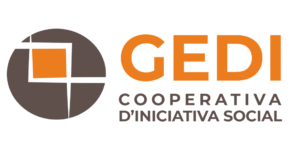
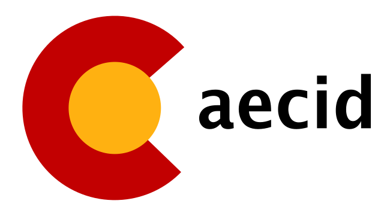
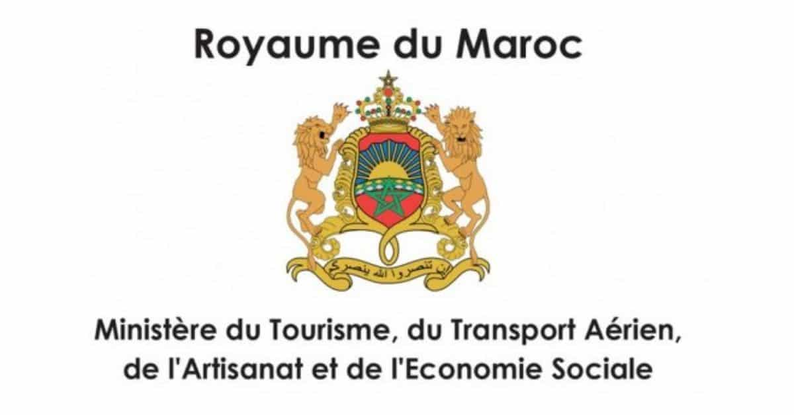
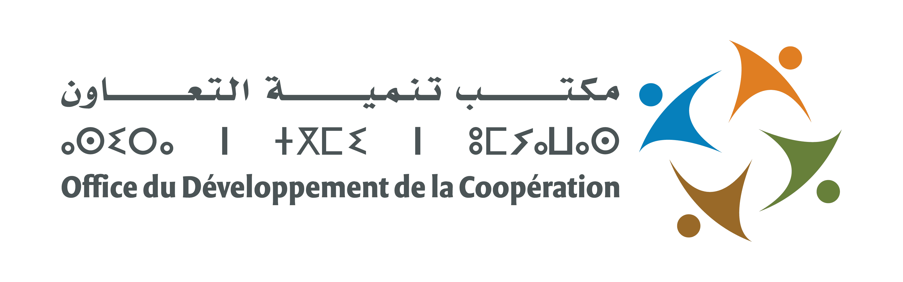
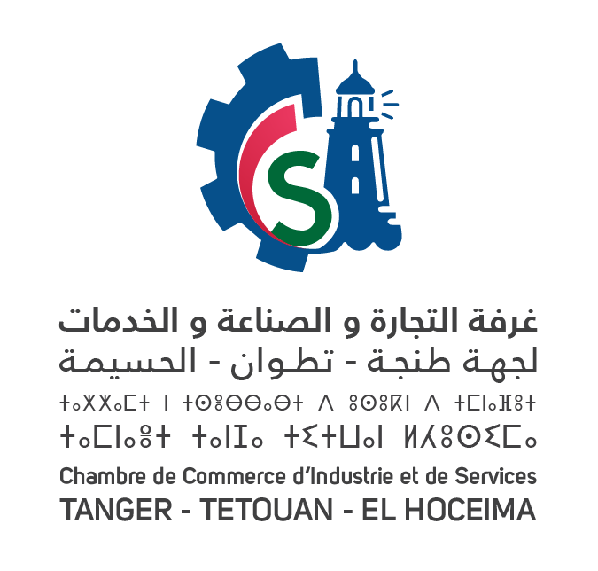
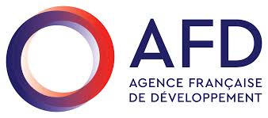
.png) 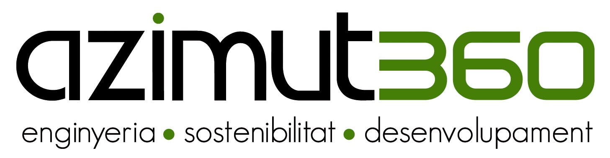
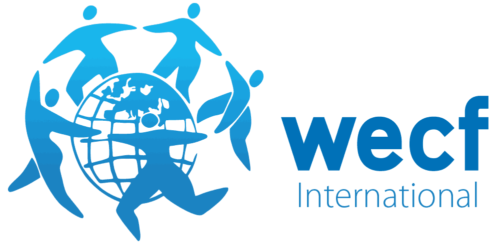
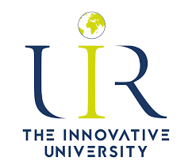
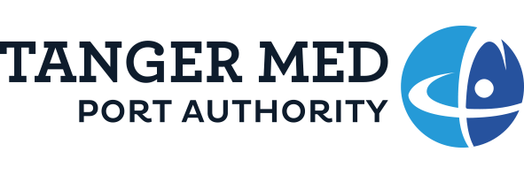
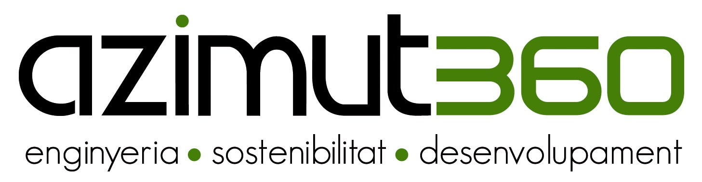
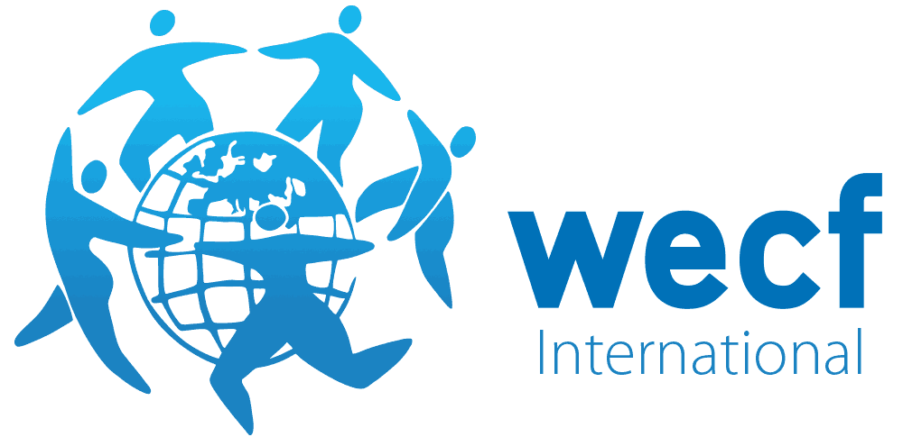
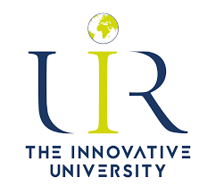
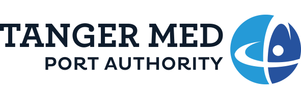
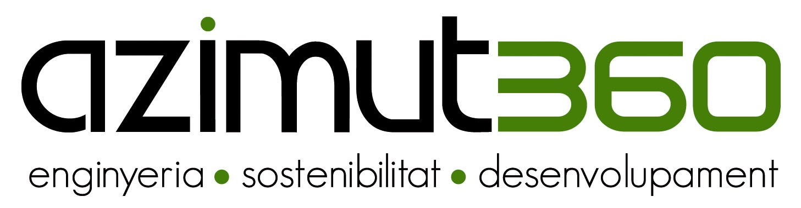
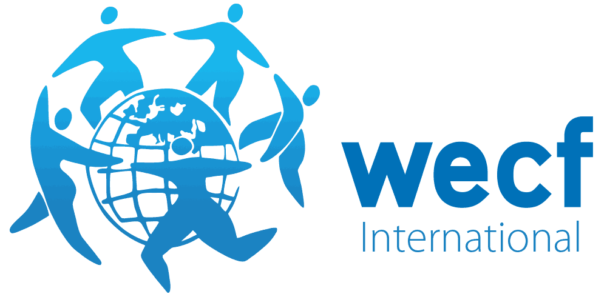
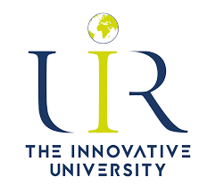
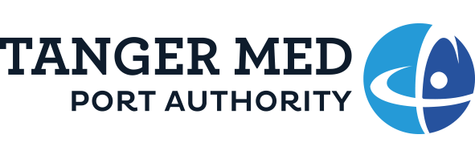
Fondée le 28 février 2023 à Tétouan (Maroc), Sun Power est bien plus qu’une simple coopérative : c’est un acteur engagé dans la transition énergétique et l’innovation sociale.
Nous concevons, produisons et proposons des solutions solaires accessibles, durables et adaptées aux besoins des particuliers comme des professionnels. Notre engagement ne s’arrête pas à la technologie : nous croyons en l’humain, en l’avenir et en un Maroc plus vert.
Notre coopérative est également un incubateur de talents. Nous soutenons l’intégration professionnelle des jeunes techniciennes et ingénieurs à travers la formation, l’accompagnement et l’expérience terrain.
Nous organisons régulièrement des ateliers de sensibilisation dans les écoles et les universités, pour faire découvrir aux nouvelles générations les opportunités du solaire et des énergies renouvelables.
Rejoindre Sun Power, c’est faire confiance à une équipe passionnée, formée localement, et tournée vers un avenir plus propre, plus juste et plus autonome.
Présidente
Spécialiste de l'entrepreneuriat vert nommée par GEDI et la CCIS de Tétouan. Forte expérience en gestion administrative, financière et partenariats. Diplômée d’un master en génie énergétique et d’un certificat en fabrication de fours et séchoirs solaires (INES).
Responsable Communication
Chargée de la stratégie de communication interne et externe. Doctorante en transfert de chaleur et d’énergie. Participe activement à la production de fours et séchoirs solaires.
Responsable Commerce & Marketing
Expérimentée dans le domaine commercial et les installations solaires. Développe la stratégie marketing de Sun Power et assure le lien avec les clients et partenaires.
Gérante
Responsable de la fabrication de séchoirs et cuisinières solaires. Mène les activités techniques et artisanales de la coopérative avec engagement et expertise.
Ambassadrice Solaire
Détentrice d'une licence en Physique, spécialisée en Électronique. Représente la coopérative auprès de réseaux comme WECF, et contribue à l'innovation technique.
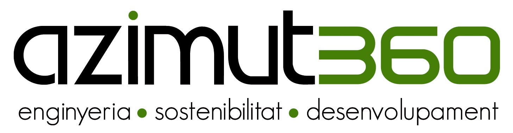
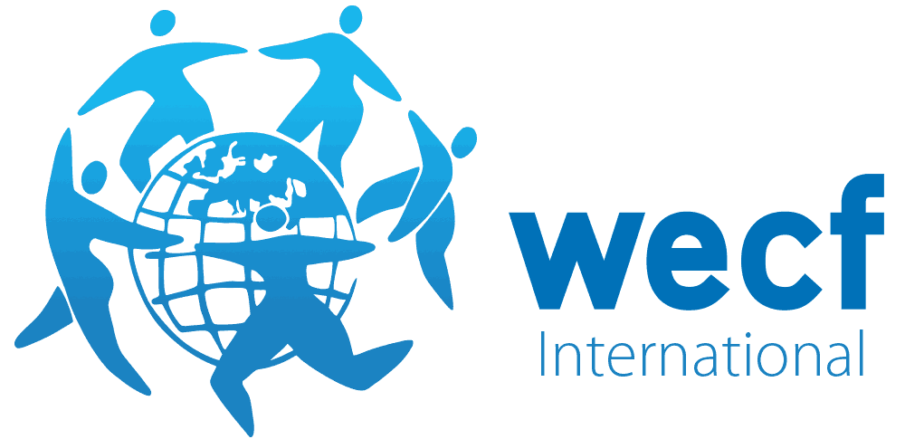
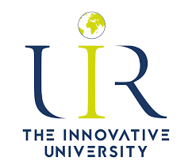
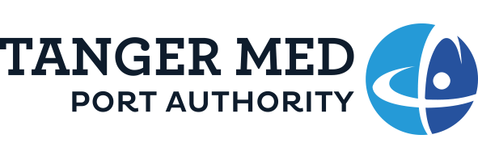